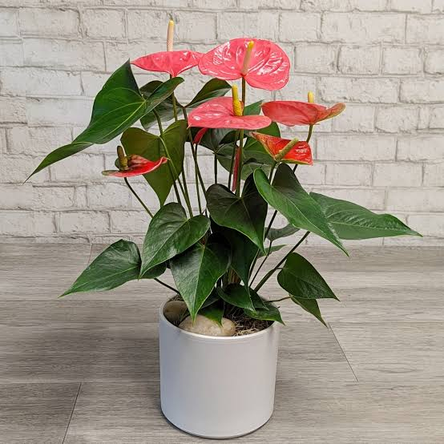
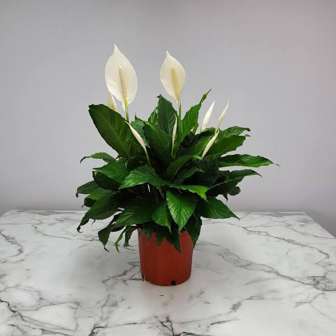

يتحمل الإضاءة الضعيفة، لكنه ينمو أفضل في الضوء المعتدل.
يُروى كلما جفت التربة تمامًا.
مناسب للمبتدئين.

نبات انتوريوم (Anthurium)
يُفضل إضاءة غير مباشرة مشرقة.
يُروى باعتدال، ولا يحب الجفاف.
أزهاره جذابة جدًا وتدوم طويلًا.

زنبق السلام (الأشرعة البيضاء)
يحب الضوء غير المباشر.
يجب إبقاء التربة رطبة ولكن غير مشبعة بالماء.
ينقي الهواء بشكل ممتاز.
تحتاج النبتة إلى ضوء ساطع مرشح مثل النافذة أو الإنارة الصناعية للغرفة. يتم الري بعد جفاف التربة مع المحافظة على رطوبتها، ورش أوراقها برذاذ الماء عدة مرات بالأسبوع مع تجنب رش الأزهار. تحتاج النبتة إلى جو معتدل وتتحمل البرودة حتى 12 درجة مئوية.